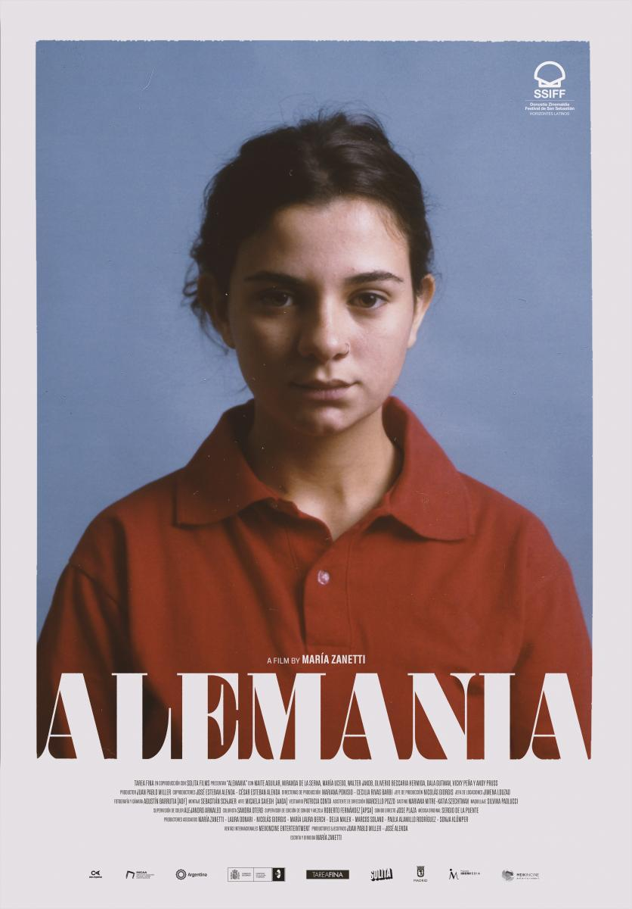
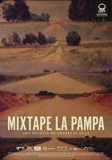

Estrenos





El cine de Argentina es uno de los más desarrollados del cine latinoamericano. Cuenta con el promedio de salas por persona más alto de América Latina.1 A lo largo del siglo xx, la producción cinematográfica argentina, apoyada por el Estado y avalada por el trabajo de una larga lista de directores y artistas, se convirtió en una de las principales del mundo en idioma castellano. Los primeros largometrajes animados, mudos y sonoros fueron realizados por Quirino Cristiani. Dos películas fueron galardonadas con el premio Óscar a la mejor película internacional, La historia oficial (1985), dirigida por Luis Puenzo y el El secreto de sus ojos (2009), de Juan José Campanella. Además, el cine argentino ha cosechado numerosos premios internacionales, entre ellos los Premios Goya, los del Festival Internacional de Cine de Berlín y regionalmente los del Festival Internacional del Nuevo Cine Latinoamericano de La Habana, entre otros.
El Instituto Nacional de Cine y Artes Audiovisuales (conocido por sus siglas INCAA) funciona como órgano público del ámbito del Ministerio de Capital Humano de la Nación, teniendo a su cargo el fomento y regulación de la actividad cinematográfica en todo el territorio de Argentina y en el exterior en cuanto se refiere a la cinematografía nacional, de acuerdo a las disposiciones de la Ley de Cine y otras normativas. Su presidente es Nicolás Batlle. Entre sus acciones más destacadas se encuentra el apoyo a la realización cinematográfica mediante la entrega de subsidios1 y la organización de concursos de proyectos, como por ejemplo Historias Breves, Ópera Prima, Raymundo Gleyzer y Desarrollo de Guiones.2345 El primer Instituto del cine, antecesor del actual INCAA fue el Instituto Nacional de Cinematografía (INC), creado en 1947 por la Ley de Cine6 modificada posteriormente por la Ley 17.741.7 Entre los años 1967 y 1971, en los que estuvo bajo la órbita de la Secretaría de Difusión y Turismo, se denominó Dirección Nacional de Cinematografía

El cine argentino ha sido bendecido con un talento femenino excepcional, dando al mundo actrices que han conquistado las pantallas con su pasión,
versatilidad y
talento innato. Desde las leyendas del cine clásico hasta las estrellas emergentes de la actualidad, las actrices argentinas han
demostrado ser maestras de la interpretación, encarnando personajes inolvidables que han conmovido a las audiencias con sus historias.
En esta sección, rendimos homenaje a algunas de las actrices más destacadas del cine argentino,
explorando sus trayectorias, sus logros y el impacto que han tenido en la industria cinematográfica.
Acompáñanos en este viaje para descubrir a las mujeres que han iluminado la pantalla grande con su talento extraordinario.


El cine argentino ha sido cuna de grandes actores que han dejado una huella imborrable en la historia del cine.
Desde figuras emblemáticas del cine clásico hasta talentos contemporáneos que nos cautivan con sus interpretaciones,
los actores argentinos han demostrado su capacidad para encarnar personajes memorables y conectar con las audiencias.
En esta sección, rendimos homenaje a algunos de los actores más destacados del cine argentino, resaltando sus contribuciones
a la industria, su versatilidad y las películas que los han convertido en íconos.

Descubre el legado cinematográfico de los directores argentinos que han dejado una marca indeleble en la industria del cine. Desde los visionarios pioneros que sentaron las bases del cine argentino hasta los innovadores contemporáneos que continúan desafiando los límites del arte cinematográfico, explora la creatividad y la visión detrás de la cámara que ha dado forma a la rica tradición cinematográfica del país. Sumérgete en una selección de imágenes que capturan momentos clave de sus carreras y aprende sobre su influencia en el panorama del cine argentino.

Esta película de suspenso psicológico narra la historia de un hombre que huye de la justicia tras cometer un asesinato. Es considerada una de las obras maestras del cine argentino temprano.

Basada en la novela homónima de Mario Benedetti, esta película dramática narra la historia de un hombre que regresa a su ciudad natal tras pasar varios años en un campo de concentración durante la Segunda Guerra Mundial. Es una de las películas más aclamadas del cine argentino y una obra maestra del cine latinoamericano

Este drama familiar narra la historia de una familia adinerada que se ve obligada a vender su mansión por la crisis económica. Es una de las obras más importantes del cine argentino de la década de 1950.

Esta película biográfica narra la historia de Camila Perri, una joven aristócrata argentina que se enamora de un sacerdote durante la época de la Revolución de Mayo. Es una de las películas más importantes del cine feminista argentino y una obra maestra del cine latinoamericano..
Esta película biográfica narra la historia de Camila Perri, una joven aristócrata argentina que se enamora de un sacerdote durante la época de la Revolución de Mayo. Es una de las películas más importantes del cine feminista argentino y una obra maestra del cine latinoamericano..

Esta película biográfica narra la historia de Camila Perri, una joven aristócrata argentina que se enamora de un sacerdote durante la época de la Revolución de Mayo. Es una de las películas más importantes del cine feminista argentino y una obra maestra del cine latinoamericano..

Esta película biográfica narra la historia de Camila Perri, una joven aristócrata argentina que se enamora de un sacerdote durante la época de la Revolución de Mayo. Es una de las películas más importantes del cine feminista argentino y una obra maestra del cine latinoamericano..

Esta película biográfica narra la historia de Camila Perri, una joven aristócrata argentina que se enamora de un sacerdote durante la época de la Revolución de Mayo. Es una de las películas más importantes del cine feminista argentino y una obra maestra del cine latinoamericano..

Esta película biográfica narra la historia de Camila Perri, una joven aristócrata argentina que se enamora de un sacerdote durante la época de la Revolución de Mayo. Es una de las películas más importantes del cine feminista argentino y una obra maestra del cine latinoamericano..